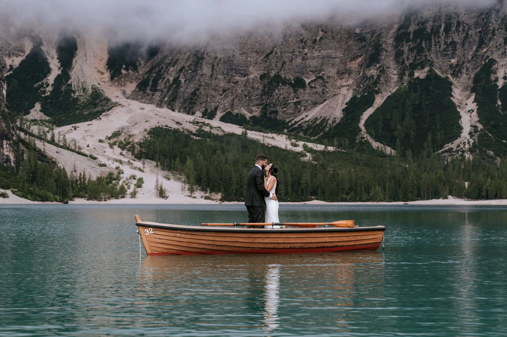
The Dolomites are the most photographed range in Europe, and it is easy to see why: pale limestone towers, turquoise lakes, tiny chapels on high green passes. But the icons come with crowds, and the best of these places reveal themselves only at the right hour. This is our honest field guide to the most beautiful spots for an elopement — what makes each one special, when to be there, how to reach it, and how to have it, for an hour, almost to yourselves.
The right spot is not simply the prettiest one; it is the one that fits your day. Some couples want the postcard — the boats at Braies, the towers of the Tre Cime — and are happy to rise before dawn to have it empty. Others want a quiet green pass with a chapel and nobody at all. Effort, access, season and light all pull on the choice, so we start from the feeling you are after and work back to the place. Below are the ones we return to again and again, and what each does best.
If you have seen one photograph of the Dolomites, it was probably here: emerald water, a wall of peaks, and a wooden boathouse lined with rowing boats. Lago di Braies earns the fame — on a still morning the reflection is perfect and the colour almost unreal — but that fame is also its catch, because by mid-morning the shoreline is shoulder to shoulder. The whole trick is to be there first, before the day arrives.
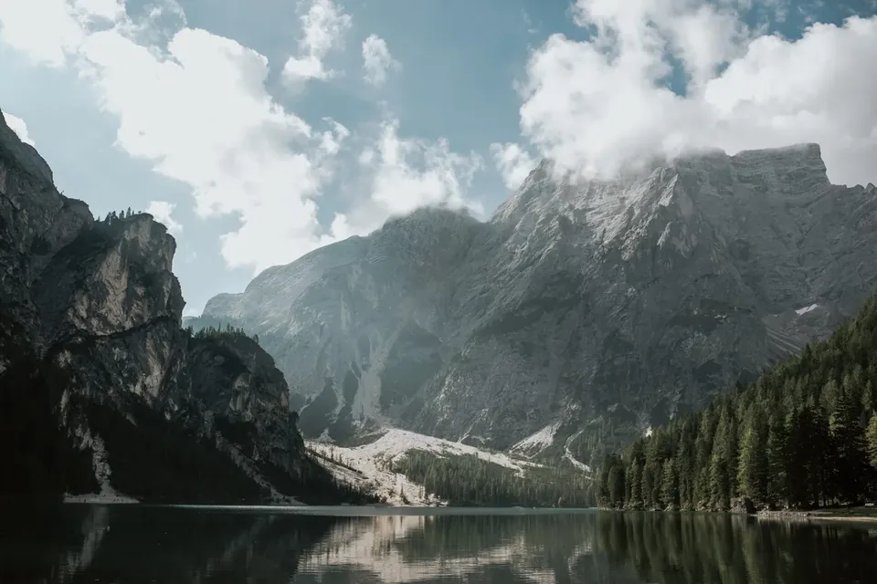
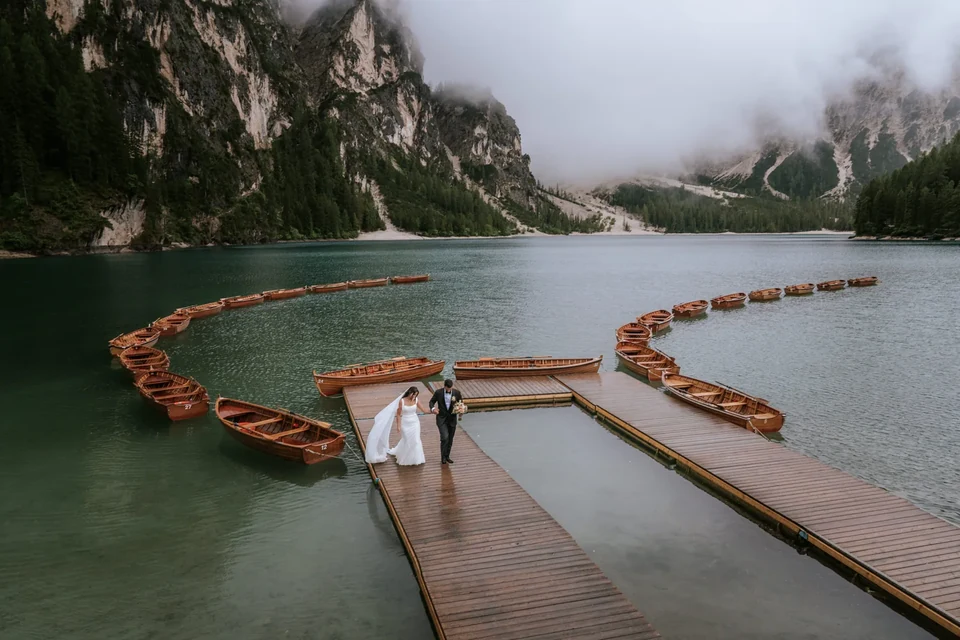
The boats are the signature. Renting one for a few minutes on the water gives you the frame everyone dreams of — the two of you adrift on glass, the great cirque rising behind — and out on the lake you are suddenly alone even when the shore is filling. It is calm, it is easy, and it is worth timing for the moment the peaks catch the first warm light.

Come for sunrise. From 1 July to 15 September the access road needs an advance reservation between 09:00 and 16:00, which is another reason we love the dawn window: arrive before it and the lake is yours, the car park is empty and the light is doing its best work. Off-season, and outside those hours, the reservation does not apply — but the crowds still favour the early riser, so the plan is the same in any month.
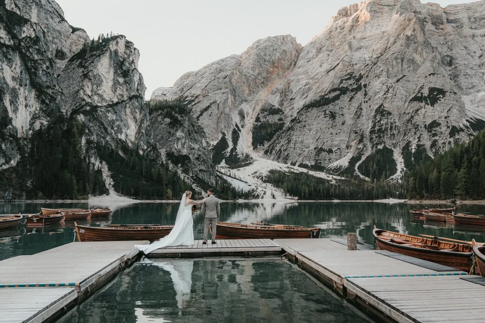
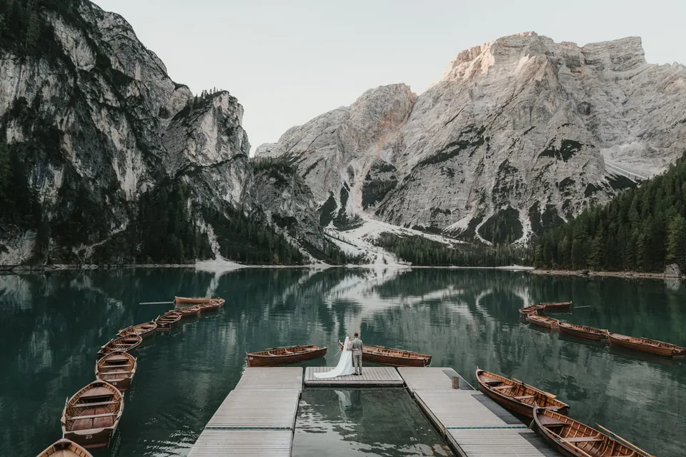
Practicalities are easy here, which is part of the appeal. There is a historic hotel and a car park right at the shore, the walk to the boathouse is flat and short, and the whole place suits a dress and nice shoes. That accessibility is exactly why Braies is often where we start a couple’s first mountain morning — maximum beauty, minimum effort, before moving somewhere wilder.

If Braies is beauty, the Tre Cime di Lavaredo are drama: three colossal stone towers standing alone above everything, arguably the most famous silhouette in the Alps. You reach the foot of them by the Auronzo toll road, which in summer is passable in the early hours, so you can drive up in the dark and be there as the first sun turns the rock to fire. Around them a network of easy paths opens ledge after ledge of jaw-dropping foreground — there is a reason this is the elopement backdrop couples travel continents for.
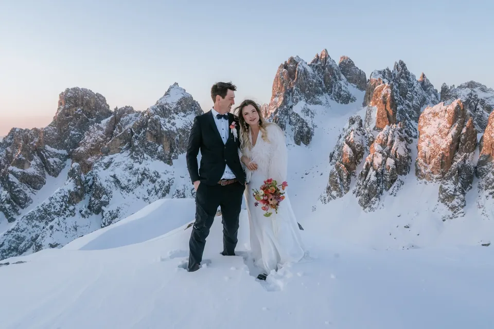
In winter the whole scene turns monochrome and almost unearthly — snow to the horizon, the towers stripped to black and white — and you may have it entirely to yourselves. It asks for more: warm layers, sure footing, and a close eye on what is open, because the toll road and mountain huts run on reduced winter schedules or close altogether. When it lines up, it is one of the most spectacular things we photograph all year.
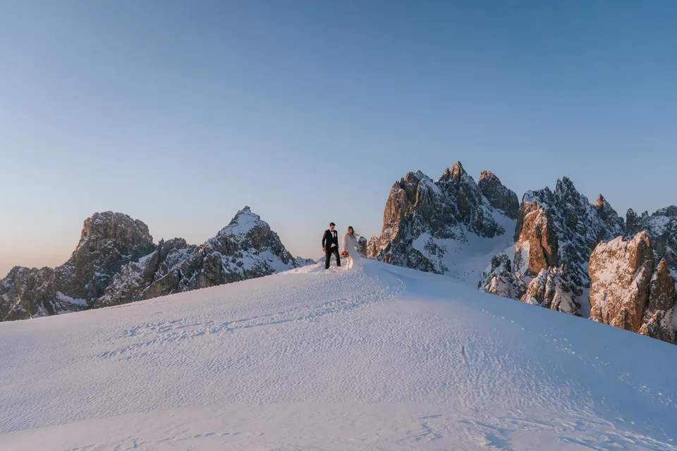
Above the green valley of Val Gardena rises the Seceda, whose tilted grass ridge and sawtooth skyline are unlike anywhere else in the range — a giant knife-edge of meadow falling away to the pale Odle peaks. A cable car from Ortisei carries you up, though it opens only around 08:30, so a true Seceda sunrise means a head-torch hike or a night in a rifugio; for golden hour you simply catch it on the way up. The valley itself is a soft, storybook base of villages, spires and pasture.
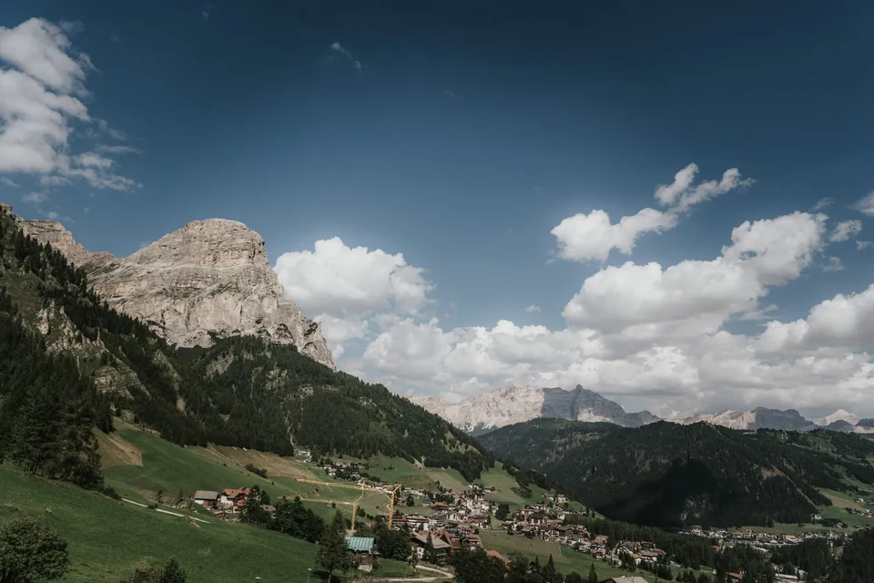
The Seceda pairs beautifully with the rest of Val Gardena. Ortisei, Santa Cristina and Selva make a comfortable, storybook base — timber villages with spires and spas, an easy drive from the passes and the cable cars. Many couples stay here for a few days and let us string the sights together: the ridge one morning, a pass at golden hour, a lake at dawn. It is the gentlest way to see a lot of the range without ever feeling rushed.
The Sella is a vast fortress of rock ringed by four mountain passes, and its walls make one of the grandest, most accessible backdrops in the Dolomites — you can stand on soft meadow with a thousand metres of vertical stone behind you, minutes from the car. It is a favourite of ours for a ceremony: enough drama to take the breath away, gentle enough underfoot for a dress, a celebrant and a guest or two. Morning light rakes across the grass and warms the rock beautifully.
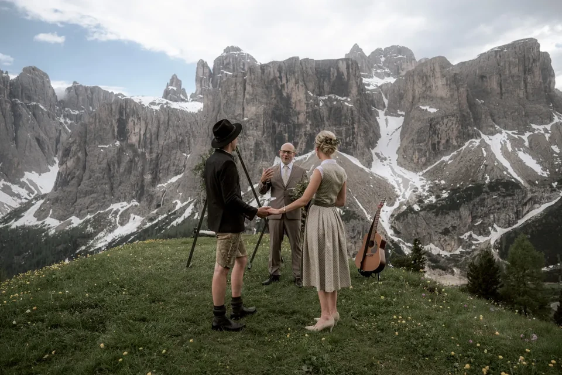
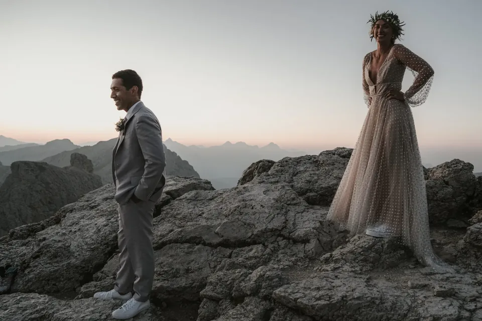
What we love most about the Sella is how little it asks for how much it gives. From the passes that ring it you are already at over 2,000 metres, so a few steps put you on open meadow with the walls towering overhead — no scramble, no exposure, just scale. It works in almost any weather, too: even when cloud is draped over the summits, the base of the Sella stays photogenic and grand. For a bad-forecast morning it is one of our most reliable saves.
The high passes that link the valleys — Passo Gardena, Passo Sella, Passo Pordoi — are the easy secret of the Dolomites: you drive to over 2,000 metres and step straight onto alpine meadow with the giants all around, no climb required. They are perfect for couples who want the high-mountain feeling without the effort, or who are bringing family. In summer they are open and glorious; in the shoulder season they empty out and glow. We often pair a pass at golden hour with a lake at dawn.
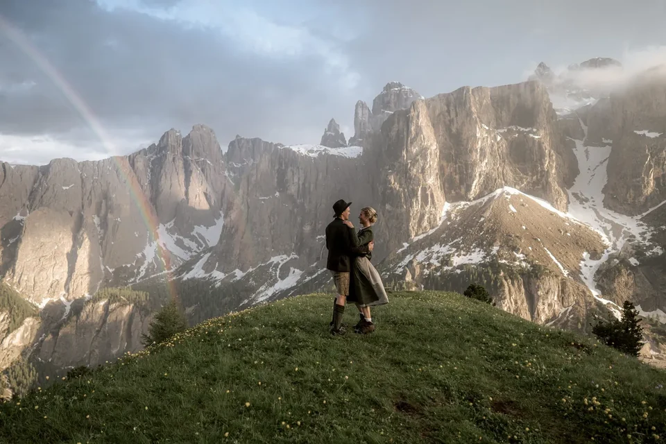
Of all the passes, Passo Giau is the one we lose our hearts to. A little pointed chapel stands on the green saddle, the shark-fin peak of Ra Gusela rises straight behind it, and at dusk the whole amphitheatre of ridges turns molten. It is roadside and easy, yet it feels remote and wild, and the evening light here is some of the best in the Dolomites. For a couple who want drama and a touch of storybook without a hike, it is very hard to beat.
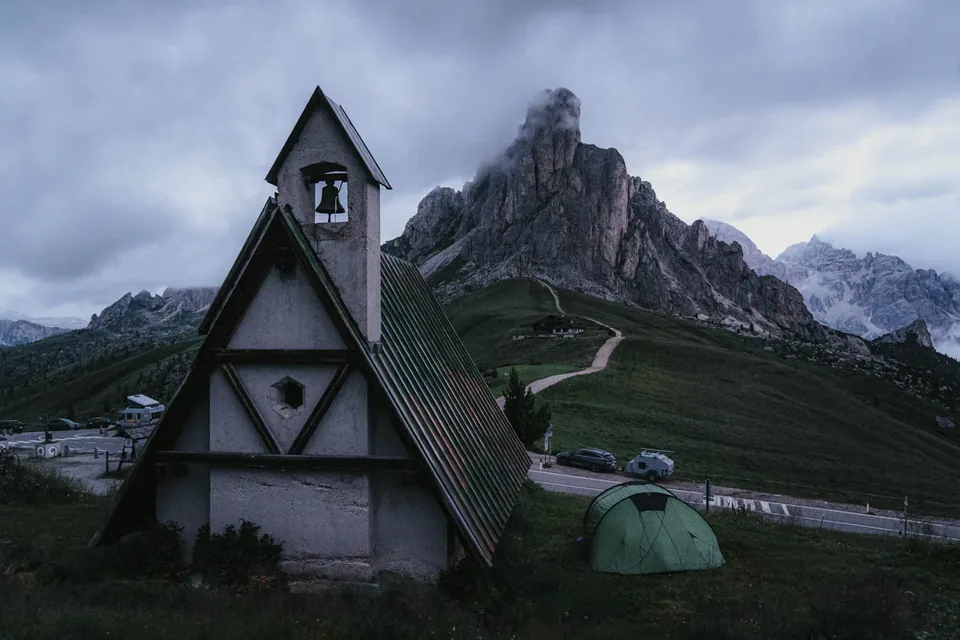
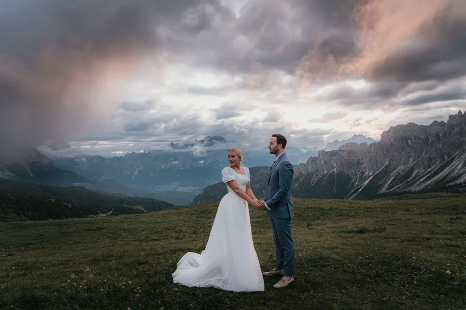
Because Giau faces the evening light so well, we usually plan it for sunset rather than dawn — and because it is a mountain pass, it is one of the few icons you can reach easily late in the day. Park, walk a minute onto the meadow, and let the sky do the rest. When the ridges catch the last colour and the chapel goes to silhouette, it is as cinematic as anywhere we work, and you can be back down to a valley dinner within the hour.
Beyond the famous names, some of our favourite frames are the quiet ones: a summit cross catching the first light, a bouquet set down on cold rock, a ridge nobody else has a name for. When a spot is too popular to promise privacy, we will often walk five more minutes to a lesser ledge with the same peaks behind it and none of the crowd in front. The Dolomites are generous like that — the icon is never the only good picture.
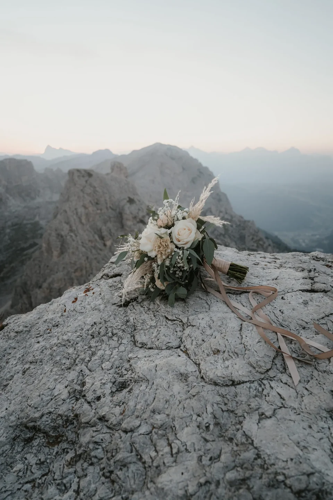
If you are happy to walk, the range hides quieter water that rewards the effort. Lago di Sorapis glows an improbable milky blue at the end of a rocky trail; Lago di Federa sits under the Croda da Lago and turns golden when the surrounding larches do; little Lago d’Antorno and Lago di Limides give big reflections for short walks. None of these carry the crowds of Braies, and a ceremony at one of them feels genuinely discovered. Tell us how far you are willing to walk and we will name the one that fits.
Season changes these places as much as the hour does. Summer (June to September) opens every road, lift and hut, and gives green meadows and the warmest light — but also the fullest car parks. Autumn is our quiet favourite: the larches turn gold, the crowds thin, and the low sun flatters the rock, though the first snows can close the highest passes. Winter is for the bold — monochrome, silent, spectacular, with reduced access. Whatever the month, sunrise is the great equaliser: even the busiest icon is calm at first light.
Getting here is easier than the drama suggests. Most couples fly into Venice, Verona or Innsbruck and drive two to three hours in. From a valley base like Cortina, Val Gardena or the Alta Badia, the icons are within an hour: Braies and the passes are roadside, the Seceda and other ridges are a cable car, the Tre Cime a summer toll road, and the hidden lakes a walk. We build the route around the light — which spot at dawn, which at dusk — and handle the reservations, the timings and the driving so your morning stays calm.
Where you base yourself shapes the trip. Cortina d’Ampezzo sits closest to Braies, the Tre Cime and Passo Giau; Val Gardena and the Alta Badia are best for the Seceda, the Sella and the western passes. We help you pick the base that keeps your chosen spots within an easy dawn drive, book huts where an overnight makes a sunrise possible, and hand you a simple schedule so the only thing you have to think about on the day is each other.
These places stay beautiful because people look after them, and a few rules keep us welcome. The Braies road needs its summer reservation; several areas are protected nature zones where structures and off-path wandering are limited; and private drones are banned across much of the Dolomites, patrolled and fined. On the ground we stay on durable surfaces, keep groups small, leave no trace and never block the very paths we came to photograph. Respect is part of being allowed back — and it is why we scout and confirm every spot before we bring you to it.
There is no single winner, and that is the honest answer. Lago di Braies is the icon — the turquoise water and wooden boats everyone pictures — but the Tre Cime di Lavaredo, the Seceda ridge and the little chapel at Passo Giau each win for a different reason. We help you match the place to the mood and effort you want, and to the light on your date.
For a small ceremony in open terrain you generally do not need a special permit, but access rules matter. The road to Lago di Braies needs an advance reservation between 09:00 and 16:00 from 1 July to 15 September; several areas are protected nature zones with rules on set-ups; and private drones are banned across much of the range. We check the specific spot before we book it.
Most of them, yes. Lago di Braies, Passo Giau and the Gardena and Sella passes are roadside; the Seceda and other ridges are reached by cable car; only a handful of the hidden lakes, like Sorapis or Lago di Federa, need a real walk. We can build a whole trip that never asks more than a short stroll, or add a hike if you want to earn the view.
Sunrise, almost always. The icons like Braies and the Tre Cime are magical and empty at first light and busy by mid-morning, so we plan the day around dawn. Autumn adds golden larches and far thinner crowds; deep summer gives the softest weather but the most visitors. We pick the hour and the season together with you.
The high, jagged places are unforgettable under snow — the Tre Cime and the snow ridges turn black-and-white and dramatic. The trade-off is access: some toll roads and lifts close or run reduced in winter, and lakes like Braies freeze over. We plan around what is actually open and safe, and winter rewards you with almost total solitude.
Fewer than you would think, and that is on purpose. Chasing five locations means seeing none of them properly; we usually plan one hero spot for the best light and perhaps a second, easier one nearby. Over a few days we can string together a proper tour — a lake at dawn, a pass in the evening, a ridge the next morning.
We use cookies for anonymous statistics (Google Analytics via Google Tag Manager) to improve this site. Analytics runs only with your consent. Privacy Policy